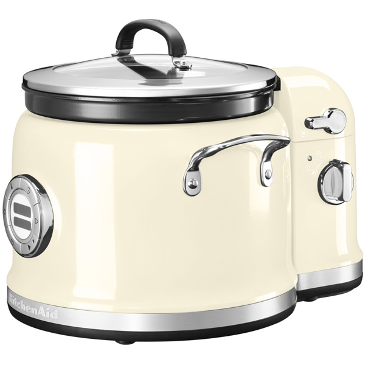

Мультишеф BORK U802 VS KitchenAid 5KMC4244
Современная техника отличается от ретро тем, что экономит самое ценное на сегодняшний день – время. Ретро дизайн - это на любителя, а вот ретро технологии это вчерашний, а быть может и позавчерашний день.
KitchenAid 5KMC4244
Преимущества KitchenAid, которые пытаются продать:
- Дизайн и выбор цветов
- Компания, которая изобрела миксеры в 1919 году
- KitchenAid переводится, как кухонный помощник
- Цельнометаллический корпус
- Возможность помешивания ингридиентов в процессе приготовления
Характеристики KitchenAid:
- Потребляемая мощность: 750 Вт
- Объём чаши полный: 4,25 л
- Объём чаши полезный: 3,95 л
- Количество программ: 12
- Диапазон температур: 75 – 230 С
- Тип управления: электронное, монохромный дисплей, кнопки
- Тип нагревательного элемента: традиционный нагрев
- Страна производитель: КНР
Преимущества мультишефа BORK U802:
- Современный тип управления (цветной, информативный дисплей, сенсорные кнопки, голосовое сопровождение, меню на русском языке) обеспечит комфорт при пользовании мультишефом
- Наличие соленоидного электромагнитного клапана, обеспечивает возможность идеально контролировать приготовление под давлением. (KitchenAid не готовит под давлением)
- Приготовление под давлением в среднем ускоряет время процесса в два раза
- Индукционный нагревательный элемент дает возможность идеально поддерживать заданную температуру с шагом 1⁰С
- Широкий диапазон температур (35-140⁰С) и регулировка шага в 1⁰C, позволяют готовить сложные блюда на низкой температуре, такие как Sous vide
- 217 автоматических рецептов с пошаговыми инструкциями приготовления
- Выбор любимых рецептов в отдельное меню
- Возможность запрограмировать 4 собственных рецепта
- Возможность запрограмировать время завершения приготовления с отсрочкой до 12 часов
- Многослойная чаша равномерно распределяет температуру и аккумулирует тепло
- Максимальная безопасность при работе с мультишефом обеспечивается комплексом систем защиты пользователя
- Защита от ребенка сохранит выставленные вами настройки
- Встроенный режим самоочистки клапана, чаши и крышки
- Антипригарное покрытие PRIMER Charcoal с покрытием wrinkle и активированным углем не впитывает запахи и идеально предотвращает пригорание продукта
- Страна производитель: Корея
- Реальная цена отличного продукта
Покупая KitchenAid, вы покупаете не только ретро дизайн, но и ретро технологии.